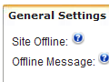
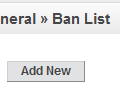
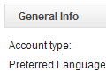
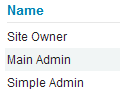
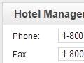
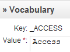
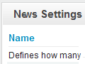
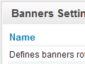
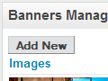
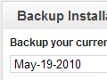

Getting Started with ApPHP Hotel Site (for version 2.0.0 or above)
1. General.
This section describes how to manage General Settings of your site.
1.1 Settings.
{kind=link}
Select Settings from the General Menu. On this page you can easy magane and change important settings of your site.
There are 3 tabs on this page: General Settings, Visual Settings and Templates & Styles.
On General Settings tab you can change:
- - Site Offline
- - Offline Message
- - Force SSL
- - SEO URLs
- - WYSIWYG Editors
- - RSS Feed Type
- - Caching
On Visual Settings Tab you can change: (change value in dropdown box to make changes for appropriate language)
- - Header Text
- - Slogan
- - Footer Text
- - Tag <TITLE>
- - Meta Tag <KEYWORDS>
- - Meta <DESCRIPTION>
On Datetime & Price Settings Tab you can change:
- - Date Format:
- - Time Zone:
- - Week Start Day:
- - Price Format:
On Email Settings Tab you can change:
- - PHP Mailer
- - E-mail address - address that used for system messages in "FROM" field
- - SMTP Settings
On Templates & Styles Tab you can change:
- - Template
On Server Info Tab you can view the important info about yuor server:
- - PHP and MySQL versions
- - Server parameters
- - etc
On Site Info Tab you can view the ranks of your site (click on update button to refresh them):
- - Google and Alexa
On Cron Jobs Tab you can define using of Cron job commands
- - Cron Jobs
1.2 Banning Emails/IP Addresses.
{kind=link}
Select Ban List from the General Menu. On this page you can easy add/change or remove banned email or IP address.
1.3 Countries.
Select Countries from the General Menu. On this page you can manage a list of countries with a standard MicroGrid page. You can add, edit or delete existing country. Also you may change a VAT value, priority order, activate country or define whether it's a default country or not.
1.4 Preview.
Preview allows admin to view the site without logging out. To preview the site simply click the General -> Preview link. If you want back to Administrator Panel click the [Back to Admin Panel] link that will appear instead of the slogan text.
2. Accounts.
This section describes how to manage accounts on your site.
 
{kind=link}
{kind=link}
2.1 My Account.
Log into Admin Panel, using administrator username and password. Then select My Account from Accounts Menu or from the top links of the page. You will see a page, where you can change your email, password and preferred language. To change data simply enter new values and then click on "Change" button.
2.2 Accounts Statistics.
Select Statistics from Accounts Menu. On this page you can view a general statistics of account on your site:
- - Customers (Map Overlay)
- - Customers (Registrations)
- - Customers (Logins)
- - etc
2.3 Roles & Privileges.
Select Roles & Privileges from Accounts Menu. You will see a page, where existing site roles are defined: Owner, Main Admin and Simple Admin. You may specify the privileges for each role by clicking on [ Privileges ] link. Privileges for Site Owner cannot be changed by anyone. Generally, the Main Admin is the role that has all rights, like a Site Owner (but may be deleted by the Owner) and a Simple Admin type is the type which has reduced rights.
2.4 Admins (for Main Admin only).
Select Admins from Accounts -> Admins Management menu. On this page you can manage all site administrator accounts. You may add, edit or delete existing accounts. When you create a new admin account you have to define an account type(role): Simple Admin or Main Admin. The privileges for selected role will be applied automatically for created account.
2.5 Customers Management.
Customer Groups:
Select Customer Groups from Accounts Menu. On this page you can add, edit or delete existing groups of Customers.
You have to enter Group Name and description (optional). Customers can be assigned to zero, one or more groups.
Customers:
Select Customers from Accounts Menu. You will see the Customers Management page. On this page you can add,
edit or delete existing accounts of Customers.
3. Hotel Management.
This section describes how to manage hotel rooms and other important hotel settings.
3.1 Hotel Info.
{kind=link}
This page allows you to manage important hotel info, like: timezone, phone and fax numbers, hotel location and code for Google Maps. You may also translate this information into other languages, unstallated on your site.
3.2 Integration.
Integration allows you to generate JavaScript code and put it in appropriate place on your web site to get a Search Availability block.
3.3 Rooms Settings.
This page allows you to define Rooms settings, like:
- Number of rooms that will be displayed on the Search Availability results page
- Types of rooms to show in search result: all or available rooms only
- Whether to show a number of children in the room
- Whether to show system suggestion feature on empty search results
3.4 Rooms Management.
Rooms Management is an important part of the Hotel Management system. This page allows you to create room types, define amount of guests in each room type, activate rooms, translate room's description into other languages (link [Description]), define default price for room, room facilities etc. Also you may define room prices for spesific periods of time and set a price of room for each week day separately. To do this click a [Prices] link in appropriate row. To set availability for specific room, click the [Availability] link.
4. Booking.
This section describes how to check booking statistics, available rooms, extras, meal plans, manage customer's bookings etc.
4.1 Booking Settings.
4.1.1 Currencies.
ApPHP Hotel Site supports multiple currencies work. On Currencies Management page you can manage existing currencies on your site: add, edit or delete. Administrator also can edit exchange rates for each currency.
4.1.2 Packages.
Packages page gives admin ability to create and manage Packages for Hotel Site. Admin may create a package for specific period of time, define a minimum and maximumn nights stay for this time, enable or disable any package etc.
4.1.3 Meal Plans.
A meal plan is a plan that is added to a room rate for providing a room and meals to guests at a hotel. Administrator can add meal plans to the hotel, making it easy for guests to see the additional cost of each plan near the room after getting search result of rooms availability.
4.1.4 Extras.
On this page administartor may define Extras (services for which an additional charge will be made). For example: Extra Bed, Internet, Airport Pickup etc.
4.2 Bookings Management.
4.2.1 Make a Reservation.
This page allows administrator to make a room reservation. To do this open the page, enter required period of time, choose available rooms, select meal plans and perfom a reservation (follow instructions on the screen).
4.2.2 Bookings.
On this page you can manage all bookings made by customers on your site: you may view details, edit them, view and print invoices, approve or cancel existing room reservation.
4.3 Promo and Discounts.
4.3.1 Campaigns.
Campaigns page gives administrator possibility to create and manage discount campaigns for your Hotel Site. There are 2 types of campaigns, that may be created - Global & Targeted. Global allows booking for any date and runs (visible) within a defined period of time only. Targeted allows booking in a specified period of time only and runs (visible) till the first date is beginning.
4.3.2 Coupons.
Coupons page gives administrator possibility to create and manage discount coupons for Hotel Site.
4.4 Information and Statistics.
4.4.1 Rooms Occupancy.
This page represents a visual tool (calendar) for checking available rooms in your hotel. You may display them by Weekly, Monthly, Yearly or List views. Easy navigation bars allow you to select a wished period of time to check availability for the room reservations.
4.4.2 Reports.
Reports feature allows administrator to get some important system reports, like: People Arriving Report, People Departing Report, People Staying Report etc.
4.4.3 Statistics.
Statistics page allows you to see all your stats on a single page. You may check distribution of bookings by months for appropriate year, booking income, booking taxes or map overlay for your customers.
5. Managing menu.
This section describes how to manage menu categories and menu items.
5.1 Creating menu categories.
Click the Add New Menu link from Menus Management. Enter a proper name in the textbox for menu category and select a placement (left, top, right or bottom - depending on whether your template supports it) from dropdown box, then choose a language. You may define access level for the menu: Public(All) or Registered only users. Press the Create button to finish creating new menu category. Menu categories will appear sorted by order from smallest to highest (last added category automatically gets lowest priority).
5.2 Editing menu categories.
To edit existing menu category - click the Edit Menus from Menus Management page, then select
an appropriate category from the list. Perform all changes you need and click Save Changes button.
You may change also the display order of each category.
If you want to delete existing menu category, go to Menus Management -> Edit Menus, then select
an appropriate menu from the list and click the Delete link at the right side.
6. Pages Management.
This section describes how to manage pages on your site.
6.1 Editing Homepage.
To edit Homepage - select Edit Home Page from the Pages Management menu. Perform all changes you need and then press Save Changes button. You may also:
- - define meta tags: title, description and keywords
- - define whether to show this page in search results or not
If you need to insert/upload images - click on Insert Image icon in the toolbar of WYSIWYG editor, then upload/select your image and press Submit button.
6.2 Creating new pages.
Click Add New Page link in the Pages Management menu. In the Page Header text box enter
a proper name for this page. Choose appropriate value from dropdown list to connect this page to required menu
and enter a text in the Page Text textarea. You may also define if this page will be an article or just a link,
allow/block comments, specify access level, meta tags, publish or just save changes without publishing etc.
Click a Create button to finish the process.
If you need to insert/upload images into page text - click on Insert Image icon in
the toolbar of WYSIWYG editor, then upload/select your image and press Submit button.
6.3 Editing pages.
To edit existing page - click Edit Pages in the Pages Management menu, then select an
appropriate page from the list. Perform all changes you need and then press Save Changes
button to save the result.
If you need to insert/upload images into page text - click on Insert Image icon in
the toolbar of WYSIWYG editor, then upload/select your image and press Submit button.
6.4 Editing system pages.
To edit system pages - click Edit System Pages in the Pages Management menu, then select an
appropriate page from the list. Perform all changes you need and then press "Save Changes" button
to save the result.
If you need to insert/upload images into page text - click on Insert Image icon in
the toolbar of WYSIWYG editor, then upload/select your image and press Submit button.
On each page you may add available modules. To do this just copy and paste into the text in
appropriate place a special module tag, for example: {module:gallery}, {module:rooms}, {module:testimonials} etc.
6.5 Remove/Restore pages.
To remove existing page - click Edit Pages in the Pages Management menu, then select an
appropriate page from the list and click Remove link from the right side. This page will be
placed in the Trash.
To restore removed page click Trash from the Pages Management, find an appropriate page and click
Restore link. The page will be restored. If you want to permanently delete this page, click Delete
link.
7. Languages Settings.
This section describes how to manage languages and define language settings.
7.1 Inserting/Editing Language.
Click Languages in the Languages Settings menu. On this page you will see a list of existing
languages. You can add new language or edit existing, change display order etc. When you add or edit
existing language you have to insert a name of the language, abbreviation, text direction, icon image and
some other data. When all needed data is entered - click Create/Update button to save it. You have to
define one language to be a default language of the site.
When you add new language the system creates for it a copy of vocabulary (a list of predefined constants,
used by the system) from the default language and you will need to translate them into the new language.
7.2 Editing Language Vocabulary.
{kind=link}
Click Vocabulary in the Languages Settings menu. On this page you can edit all vocabulary
constants of existing languages. To change a text of the constant, select an appropriate language from dropdown list,
then click [Edit] link and enter a new text in the textarea. You may use Google automatic translation to help
yourself in this work. To do this simply past in textarea default language text and then click on
Translate via Google button (works for Google paid accounts only).
You may also update your vocabulary by uploading a vocabulary file (if you created such file before or already have it
from the previous instalaltion). To do this simply click [Upload from File] link, then select vocabulary
file, language to update and press on Upload and Process button.
8. Mass Mail & Email Templates.
This section describes how to work with Mass Mail & Email Templates.
8.1 Email Templates.
To edit Email Templates go to Mass Mail & Templates -> Email Templates page. On this page you can see a list of existing email templates. Email Templates are managed with a standard MicroGrid page. You can add, delete or edit existing records. There some templates that signed as "system" templates that cannot be deleted, because they are used in the system.
8.2 Mass Mail.
With the Mass Mail feature, it's possible to create and send powerful mass mail messages to registered customers and/or admins. To do this go to Mass Mail & Templates -> Mass Mail page. On this page you can select the templates, define targeting group of receivers (or send a test email) and prepare/edit the text of email message. There are some pre-defined constants you may use in the text of email that will be replaced with appropriate values before sending an email. For example: {YEAR} will be replaced with the current year in YYYY format etc.
9. Modules.
This section describes how to work with embedded(exisiting) modules.
9.1 Modules Management.
Select Modules Management from the Modules Menu. On this page you can easy install/uninstall exisiting modules, for example: News, Backup etc.
9.2 Pages Module.
This section describes how to work with the Pages Module.
This is a system module and the script doesn't allow to uninstall it.
9.3 Rooms Module.
This section describes how to work with the Rooms Module.
This is a system module and the script doesn't allow to uninstall it.
Rooms Module settings.
See here.
9.4 Customers Module.
This section describes how to work with the Customers Module.
Customers Module settings.
This page allows you to define Customers Module settings, like:
- Possibility to add new customers by Admin
- Whether confirmation (which type of) is required for registration
- Allow image verification (captcha) on customer registration page
- Allow existing customers to login
- Allow registration of new customers
- Allow changing customer password by Admin
- Allow customers to restore their passwords
- alert administrator on new customer registration
- Allow Remember Me feature
9.5 Contact Us Module.
This section describes how to work with the Contact Us Module.
Contact Us module settings.
This page allows you to define Contact Us settings, like:
- The keyword that will be replaced with Contact Us form (copy and paste it into the page)
- The email address, that will be used to receive information
- Specifies whether to allow time delay between sending emails.
- Defines a length of delay between emails in seconds.
- Specifies whether to allow image verification
9.6 Comments Module.
This section describes how to work with the Comments Module.
Comments module settings.
This page allows you to define Comments settings, like:
- Specifies whether to allow comments to articles
- Type of users, who can post comments
- The maximum length of comments
- Specifies whether to allow image verification (captcha)
- Defines how much comments will be shown on one page
- Specifies whether to allow pre-modaration for comments
- The maximum pending time for deleting of comment in minutes
Comments Management page.
On this page admin can manage comments: approve, deny or delete them.
9.7 Booking Module.
This section describes how to work with the Booking Module.
This page allows you to define Booking Module settings, like:
- Activation of booking module
- Enable/Disable 'POA' payment type
- Enable/Disable 'On-line Order' payment type
- Enable/Disable collecting of credit card info for 'On-line Orders'
- Enable/Disable 'Bank Transfer' payment type
- Enable/Disable banking information: name of the bank, branch, account number etc.
- Enable/Disable 'PayPal' payment type
- PayPal (business) email
- Enable/Disable '2CO' payment type
- Specifies 2CO Vendor ID
- Enable/Disable 'Authorize.Net' payment type
- Specifies Authorize.Net Login ID and Transaction Key
- Default payment processing system
- Enable/Disable sending a copy of order to admin
- Enable/Disable creating account for booking
- Defines a pre-payment type
- Defines a pre-payment value for 'fixed sum' or 'percentage' types
- Specifies default VAT value for order (in %)
- Defines a minimum number of nights per booking
- Defines a maximum number of nights per booking
- Specifies mode for Booking Module: DEMO/REAL
- Specifies whether to allow showing of fully booked/unavailable rooms in search
- Defines a timeout for 'preparing' orders before automatic deleting (in hours)
- Specifies the number of days before customers may cancel a reservation
- Specifies whether to show Reservation Form on homepage or not
- Start (initial) fee - the sum that will be added to each booking
- Specifies the type of booking numbers
- Specifies whether VAT fee is included in room and extras prices or not
- Specifies whether to show Booking Status Form on homepage or not
- Specifies the maximum allowed room reservations (not completed) per customer
- Specifies a type of the 'first night' value calculating: real or average
- Specifies whether to show 'reserved' rooms in search results until booking is complete
- Specifies whether to send email alert to customer when reservation has expired
9.8 News Module.
This section describes how to work with the News Module.
{kind=link}
News Settings.
This page allows you to define News settings, like:
- How many news will be shown in the News block
- Length of news header in block
- Using of RSS channel for news
- Defines whether to show News side block or not
- Defines whether to show Newsletter Subscription block or not
Creation and Management.
The News module allows you to create and manage news on your site.
To do this go to Modules -> News -> News Management. On this page you will
see a list of previously added news. News are managed with a standard
MicroGrid page. You can add, edit or delete news records.
There are two type of news that may be created: news or events.
If you create event, visitors could register to this event via online form.
All registered users may be viewed via Modules -> News -> News Management -> events()
Subscription Management (Newsletter Subscription).
The News module allows you to create and manage Mailing Lists on your site. You may place
a Subscription block on the Front-End of your site and allow visitors to subscribe for
news or manually add/remove subscribers via Modules -> News -> Subscription Management page.
To send newsletter for subscribers go to Mass Mail -> Templates -> Mass Mail page, then select
from Email Address dropdown box "Newsletter Subscribers", prepare the newsletter text and click
the "Send" button.
9.9 Gallery.
This section describes how to work with the Gallery Module.
Gallery Settings.
This page allows you to define Gallery settings, like:
- The keyword that will be replaced with gallery
- The keyword that will be replaced with a certain album images
- Allowed types of Gallery
- Album icon width
- Album icon height
- Number of album icons per line
- Allowed types of Video Gallery
- Defines a wrapper type for gallery
- Specifies whether to show count of images/video under album name
Gallery Management.
The Gallery module allows you to create and manage gallery albums on your site.
To do this go to Modules -> Gallery -> Gallery Management. On this page you will
see a list of existing albums. Albums are managed with a standard MicroGrid page.
You can add, delete or edit albums info. To upload/delete images from the certain
album - click Upload link.
9.10 Banners.
This section describes how to work with the Banners Module.
 {kind=link}
{kind=link}
Banners Settings.
This page allows you to define Banners settings, like:
- Whether banners module is active or not
- Type of banner rotation
- Banners rotation delay in seconds
- Using of HTML in slideshow captions or not
Banners Management.
The Banners module allows you to create, upload and manage banners on your site.
To do this go to Modules -> Banners -> Banners Management. On this page you will
see a list of existing banners, that are managed with a standard MicroGrid page.
You can add, delete or edit records, upload banner images.
9.11 Testimonials Module.
This section describes how to work with the Testimonials Module.
Testimonials Settings.
This page allows you to define Testimonials settings, like:
- Keyword that will be replaced with a list of customer testimonials
Testimonials Management.
The Testimonials module allows you to add and manage testimonials on your site.
To do this go to Modules -> Testimonials -> Testimonials Management. On this page you will
see a list of existing testimonials, that are managed with a standard MicroGrid page.
You can add, delete or edit records, upload banner images.
9.12 FAQ Module.
This section describes how to work with the FAQ Module.
FAQ Settings.
This page allows you to define Banners settings, like:
- Whether FAQ module is active or not
FAQ Management.
The FAQ module allows you to create FAQ categories knowladge base. To do this go to
Modules -> FAQ -> FAQ Management. On this page you will see a list of existing FAQ categories.
You can add, edit or delete categories records. Once FAQ category is created, you may add
category questions and answers. To do this simply click on "Question" link of appropriate category
and on the new page create/edit the pairs: question/answer.
9.13 Backup & Restore Module.
{kind=link}
Creating a backup.
This script allows you easily create backup of your database. To do this go
to Modules -> Backup & Restore -> Backup Installation. On this page you can see a list
of existing backups. If you want to add new backup click on "Backup" button.
After the backup is complete it will appear in the list below.
Restoring from backup.
To restore database from existing backup go to Modules -> Backup & Restore -> Backup Restore
page and look on the list of existing backups. Select a backup you want to restore and click
on "Restore" link at the right side. After backup restore is complete, refresh the site or
re-login.